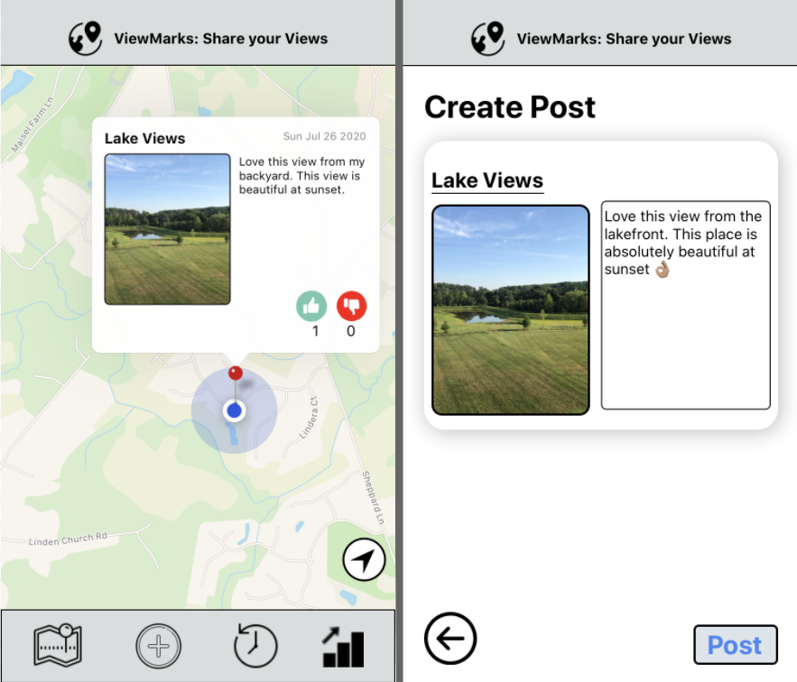
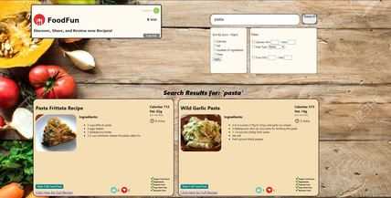
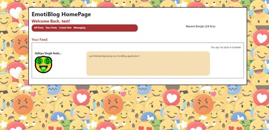
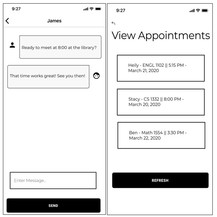

I am a CS Major at Georgia Tech, interested in Machine Learning and Backend Development. Here, you can
find some of the full stack projects that I've been working on. I love
creating and building applications from start to finish.
Status: Seeking Software Engineer Internship for Summer 2021
Education: Junior CS Major @ Georgia Tech
Personal Projects

ViewMarks: Image Sharing Mobile Application
A mobile application (developed in React Native) that allows users
to share aesthetic views that they see out in the world. They can
also look at other people's favorite view captures and leave
ratings.For testing purposes, please download the Expo app off the App
Store. Also, please test using an IPhone, for it functions much
smoother on IPhone than on Android.

FoodFun: Recipe Web Application
A full-stack recipe reviewing application which allows users to
search through thousands of unique recipes, leave ratings and
comments for each recipe, and share with their friends. Leveraged
the Edamam Recipe API for Developers.

EmotiBlog: Blogging Web Application
Live feed blogging application allowing users to share their
feelings through emoji styled messages. Also allows users to send
emoji styled SMS messages to cell phones. Created through the MERN
stack.

Tube: Tutoring Mobile Application
A mobile tutoring application supporting both iOS and Android.
Tube is meant to simplify the tutoring process: to seamlessly
connects users and tutors on a university campus. Utilized Google
Firebase for the backing database and subsequently implemented a
Messaging API in order to allow users and tutors to connect in a
matter of minutes.
Work Experience
Software Engineer Intern - Summer 2020
Built a full-stack application to assist DevOps Engineers in monitoring/resolving big data job workflows.
Optimized the job failure resolution process for Senior Engineers by 50% by transferring their daily
logging responsibilities from an Excel Spreadsheet to an internally deployed web application. Performed live updates
by regularly scanning a REST API to provide insight on the status of over 1,000 job failures stored in a PostgreSQL Database.
Software and Systems Intern - Summer 2019
Gathered data from infrared sensors used to measure foot traffic in high-volume, public locations.
Scripted regression models in Python to extract sinusoidal patterns in collected
foot traffic data and extrapolate said patterns.